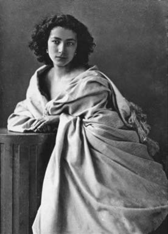

Dünyaca ünlü tiyatro oyuncusu Sarah Bernhardt (1844–1923) İstanbul’u üç kez ziyaret etmişti: 1888, 1904 ve 1908 yıllarında. Ancak 1888 yılındaki ilk gelişinde henüz ülkemizde tanınmayan Bernhardt, II. Abdülhamit’in hafiye teşkilatı tarafından dikkatle takip edilmiş, hatta saraya yaranmak isteyen birkaç hafiye de sanatçı ve ekibi hakkında “şüphe sahibi olduklarını” ima eden birkaç “jurnal” (ihbar) yazmışlardır. Bu yazılan ihbar mektuplarından ikisi hâlâ Başbakanlık Devlet Arşivi’nde korunmaktadır.
Oyuncunun ikinci gelişi de dönemin ‘Sabah’ gazetesinin 6 Aralık 1904 tarihli sayısında kısa bir haberle yer alırken, ancak üçüncü ve son gelişinde, Kasım 1908’de Cenap Şahabettin imzasıyla çıkan bir yazıda kendisinden hakkı teslim edilerek söz edilmiştir. Bu yazı yazarın “Evrak-ı Eyyam” adlı kitabında bulunabilir.

Nadar’ın objektifinden Sarah Bernhardt (1865)